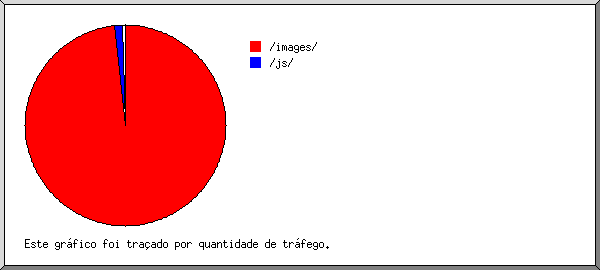

Estatísticas do Servidor Web de professoresdaect.info
Estatísticas do Servidor Web de professoresdaect.info
Começo do programa em Sex-31-Jan-2014 10:38.
Análise de pedidos desde Sex-17-Jan-2014 08:24 até Sex-31-Jan-2014 09:54 (14,06 dias).
Estatísticas do Servidor Web de professoresdaect.infoComeço do programa em Sex-31-Jan-2014 10:38.
Análise de pedidos desde Sex-17-Jan-2014 08:24 até Sex-31-Jan-2014 09:54 (14,06 dias).
(Ir a: Início | Sumário Geral | Relatório Mensal | Resumo Diário | Resumo Horário | Relatório de Domínios | Relatório de organizações | Relatório do sítio de referência | Relatório de pesquisa de palavras | Relatório de Leitores | Resumo de Leitores | Relatório de Sistemas Operativos | Relatório de Códigos de Estado | Relatório de Tamanho de Ficheiro | Relatório de Tipos de Ficheiro | Relatório de Directorias | Relatório de Pedidos)
Os valores entre parêntesis referem-se aos 7 dias até 31-Jan-2014 10:38.
Pedidos atendidos: 116 030 (54 185)
Número médio de pedidos atendidos por dia: 8 250 (7 740)
Ficheiros diferentes solicitados: 139 (125)
Servidores diferentes atendidos: 2 118 (190)
Tráfego total: 1,12 gigabytes (545,72 megabytes)
Tráfego médio transferido por dia: 81,78 megabytes (77,96 megabytes)
(Ir a: Início | Sumário Geral | Relatório Mensal | Resumo Diário | Resumo Horário | Relatório de Domínios | Relatório de organizações | Relatório do sítio de referência | Relatório de pesquisa de palavras | Relatório de Leitores | Resumo de Leitores | Relatório de Sistemas Operativos | Relatório de Códigos de Estado | Relatório de Tamanho de Ficheiro | Relatório de Tipos de Ficheiro | Relatório de Directorias | Relatório de Pedidos)
Cada unidade ( ) representa 1 pedido de uma página.
) representa 1 pedido de uma página.
| mês | N.ped | Pgs. | |
|---|---|---|---|
| Jan 2014 | 116030 | 0 |
Mês mais movimentado: Jan 2014 (0 pedidos de páginas).
(Ir a: Início | Sumário Geral | Relatório Mensal | Resumo Diário | Resumo Horário | Relatório de Domínios | Relatório de organizações | Relatório do sítio de referência | Relatório de pesquisa de palavras | Relatório de Leitores | Resumo de Leitores | Relatório de Sistemas Operativos | Relatório de Códigos de Estado | Relatório de Tamanho de Ficheiro | Relatório de Tipos de Ficheiro | Relatório de Directorias | Relatório de Pedidos)
Cada unidade () representa 1 pedido de uma página.
| dia | N.ped | Pgs. | |
|---|---|---|---|
| Dom | 13068 | 0 | |
| Seg | 25675 | 0 | |
| Ter | 18184 | 0 | |
| Qua | 8896 | 0 | |
| Qui | 8347 | 0 | |
| Sex | 26107 | 0 | |
| Sab | 15753 | 0 |
(Ir a: Início | Sumário Geral | Relatório Mensal | Resumo Diário | Resumo Horário | Relatório de Domínios | Relatório de organizações | Relatório do sítio de referência | Relatório de pesquisa de palavras | Relatório de Leitores | Resumo de Leitores | Relatório de Sistemas Operativos | Relatório de Códigos de Estado | Relatório de Tamanho de Ficheiro | Relatório de Tipos de Ficheiro | Relatório de Directorias | Relatório de Pedidos)
Cada unidade () representa 1 pedido de uma página.
| h | N.ped | Pgs. | |
|---|---|---|---|
| 00 | 8370 | 0 | |
| 01 | 5332 | 0 | |
| 02 | 3164 | 0 | |
| 03 | 1593 | 0 | |
| 04 | 664 | 0 | |
| 05 | 154 | 0 | |
| 06 | 335 | 0 | |
| 07 | 355 | 0 | |
| 08 | 1133 | 0 | |
| 09 | 3107 | 0 | |
| 10 | 4342 | 0 | |
| 11 | 6195 | 0 | |
| 12 | 6393 | 0 | |
| 13 | 6781 | 0 | |
| 14 | 5634 | 0 | |
| 15 | 6652 | 0 | |
| 16 | 6547 | 0 | |
| 17 | 5637 | 0 | |
| 18 | 5753 | 0 | |
| 19 | 6417 | 0 | |
| 20 | 6455 | 0 | |
| 21 | 6617 | 0 | |
| 22 | 8638 | 0 | |
| 23 | 9762 | 0 |
(Ir a: Início | Sumário Geral | Relatório Mensal | Resumo Diário | Resumo Horário | Relatório de Domínios | Relatório de organizações | Relatório do sítio de referência | Relatório de pesquisa de palavras | Relatório de Leitores | Resumo de Leitores | Relatório de Sistemas Operativos | Relatório de Códigos de Estado | Relatório de Tamanho de Ficheiro | Relatório de Tipos de Ficheiro | Relatório de Directorias | Relatório de Pedidos)
Mostrando os domínios, ordenados por quantidade de tráfego.
| N.ped | %bytes | domínio |
|---|---|---|
| 116030 | 100% | [endereço numérico não traduzido] |
(Ir a: Início | Sumário Geral | Relatório Mensal | Resumo Diário | Resumo Horário | Relatório de Domínios | Relatório de organizações | Relatório do sítio de referência | Relatório de pesquisa de palavras | Relatório de Leitores | Resumo de Leitores | Relatório de Sistemas Operativos | Relatório de Códigos de Estado | Relatório de Tamanho de Ficheiro | Relatório de Tipos de Ficheiro | Relatório de Directorias | Relatório de Pedidos)

Mostrando as 20 primeiras organizações por número de pedidos, ordenadas por número de pedidos.
| N.ped | %bytes | organização |
|---|---|---|
| 20114 | 16,59% | 187.61 |
| 18168 | 15,26% | 189.124 |
| 10612 | 9,63% | 177.20 |
| 10306 | 9,41% | 187.40 |
| 4362 | 3,79% | 177.64 |
| 3960 | 3,80% | 179.190 |
| 3887 | 3,05% | 179.211 |
| 2902 | 2,63% | 186.236 |
| 2789 | 2,34% | 187.111 |
| 2693 | 2,00% | 177.195 |
| 2578 | 1,93% | 177.65 |
| 2508 | 2,28% | 187.60 |
| 2384 | 1,66% | 177.193 |
| 2289 | 2,23% | 186.208 |
| 1566 | 1,53% | 177.135 |
| 1528 | 1,37% | 179.156 |
| 1443 | 1,23% | 201.9 |
| 1442 | 1,36% | 177.207 |
| 1181 | 0,99% | 189.70 |
| 1150 | 1,02% | 187.123 |
| 18168 | 15,90% | [não listadas: 187 organizações] |
(Ir a: Início | Sumário Geral | Relatório Mensal | Resumo Diário | Resumo Horário | Relatório de Domínios | Relatório de organizações | Relatório do sítio de referência | Relatório de pesquisa de palavras | Relatório de Leitores | Resumo de Leitores | Relatório de Sistemas Operativos | Relatório de Códigos de Estado | Relatório de Tamanho de Ficheiro | Relatório de Tipos de Ficheiro | Relatório de Directorias | Relatório de Pedidos)

Mostrando os sítios de referência, ordenados por número de pedidos.
| N.ped | sítio |
|---|---|
| 111915 | http://professoresdaect.info/ |
| 3069 | http://www.professoresdaect.info/ |
| 8 | https://www.google.com.br/ |
| 1 | fbapp://350685531728/ |
| 1 | http://www.google.com.br/ |
(Ir a: Início | Sumário Geral | Relatório Mensal | Resumo Diário | Resumo Horário | Relatório de Domínios | Relatório de organizações | Relatório do sítio de referência | Relatório de pesquisa de palavras | Relatório de Leitores | Resumo de Leitores | Relatório de Sistemas Operativos | Relatório de Códigos de Estado | Relatório de Tamanho de Ficheiro | Relatório de Tipos de Ficheiro | Relatório de Directorias | Relatório de Pedidos)

Mostrando as palavras pesquisadas, ordenadas por número de pedidos.
| N.ped | termo pesquisado |
|---|---|
| 1 | leite |
| 1 | luiz |
| 1 | eduardo |
| 1 | cunha |
(Ir a: Início | Sumário Geral | Relatório Mensal | Resumo Diário | Resumo Horário | Relatório de Domínios | Relatório de organizações | Relatório do sítio de referência | Relatório de pesquisa de palavras | Relatório de Leitores | Resumo de Leitores | Relatório de Sistemas Operativos | Relatório de Códigos de Estado | Relatório de Tamanho de Ficheiro | Relatório de Tipos de Ficheiro | Relatório de Directorias | Relatório de Pedidos)
Mostrando os leitores com pelo menos 1 pedido de uma página, ordenados por número de pedidos de páginas.
| N.ped | Pgs. | Leitor |
|---|---|---|
| 115931 | 0 | [não listados: 401 Leitores] |
(Ir a: Início | Sumário Geral | Relatório Mensal | Resumo Diário | Resumo Horário | Relatório de Domínios | Relatório de organizações | Relatório do sítio de referência | Relatório de pesquisa de palavras | Relatório de Leitores | Resumo de Leitores | Relatório de Sistemas Operativos | Relatório de Códigos de Estado | Relatório de Tamanho de Ficheiro | Relatório de Tipos de Ficheiro | Relatório de Directorias | Relatório de Pedidos)
Mostrando os leitores com pelo menos 1 pedido de uma página, ordenados por número de pedidos de páginas.
| no. | N.ped | Pgs. | Leitor |
|---|---|---|---|
| 115931 | 0 | [não listados: 13 Leitores] |
(Ir a: Início | Sumário Geral | Relatório Mensal | Resumo Diário | Resumo Horário | Relatório de Domínios | Relatório de organizações | Relatório do sítio de referência | Relatório de pesquisa de palavras | Relatório de Leitores | Resumo de Leitores | Relatório de Sistemas Operativos | Relatório de Códigos de Estado | Relatório de Tamanho de Ficheiro | Relatório de Tipos de Ficheiro | Relatório de Directorias | Relatório de Pedidos)
Mostrando os Sistemas Operativos, ordenados por número de pedidos de páginas.
| no. | N.ped | Pgs. | Sistema Operativo |
|---|---|---|---|
| 1 | 63 | 0 | Robôs |
| 2 | 2157 | 0 | Sistema Operativo desconhecido |
| 3 | 96476 | 0 | Windows |
| 3 | 0 | Windows NT | |
| 18 | 0 | Windows Server 2003 | |
| 4589 | 0 | Windows XP | |
| 91866 | 0 | Windows desconhecido | |
| 4 | 11973 | 0 | Unix |
| 11973 | 0 | Linux | |
| 5 | 700 | 0 | Symbian OS |
| 6 | 4562 | 0 | Macintosh |
(Ir a: Início | Sumário Geral | Relatório Mensal | Resumo Diário | Resumo Horário | Relatório de Domínios | Relatório de organizações | Relatório do sítio de referência | Relatório de pesquisa de palavras | Relatório de Leitores | Resumo de Leitores | Relatório de Sistemas Operativos | Relatório de Códigos de Estado | Relatório de Tamanho de Ficheiro | Relatório de Tipos de Ficheiro | Relatório de Directorias | Relatório de Pedidos)

Mostrando os códigos de estado, por ordem numérica.
| N.ped | cod. estado |
|---|---|
| 89554 | 200 OK |
| 455 | 206 Partial content |
| 26021 | 304 Not modified since last retrieval |
(Ir a: Início | Sumário Geral | Relatório Mensal | Resumo Diário | Resumo Horário | Relatório de Domínios | Relatório de organizações | Relatório do sítio de referência | Relatório de pesquisa de palavras | Relatório de Leitores | Resumo de Leitores | Relatório de Sistemas Operativos | Relatório de Códigos de Estado | Relatório de Tamanho de Ficheiro | Relatório de Tipos de Ficheiro | Relatório de Directorias | Relatório de Pedidos)

| tamanho | N.ped | %bytes |
|---|---|---|
| 0 | 26021 | |
| 1B- 10B | 0 | |
| 11B- 100B | 0 | |
| 101B- 1kB | 13695 | 0,94% |
| 1kB- 10kB | 40296 | 9,48% |
| 10kB-100kB | 36018 | 89,58% |
(Ir a: Início | Sumário Geral | Relatório Mensal | Resumo Diário | Resumo Horário | Relatório de Domínios | Relatório de organizações | Relatório do sítio de referência | Relatório de pesquisa de palavras | Relatório de Leitores | Resumo de Leitores | Relatório de Sistemas Operativos | Relatório de Códigos de Estado | Relatório de Tamanho de Ficheiro | Relatório de Tipos de Ficheiro | Relatório de Directorias | Relatório de Pedidos)

Mostrando as extensões com pelo menos 0,1% do tráfego, ordenadas por quantidade de tráfego.
| N.ped | %bytes | extensão |
|---|---|---|
| 50925 | 51,92% | .jpg [JPEG graphics] |
| 13450 | 29,75% | .JPG |
| 12341 | 8,20% | .png [PNG graphics] |
| 19964 | 7,65% | .gif [GIF graphics] |
| 646 | 1,39% | .jpeg [JPEG graphics] |
| 9472 | 0,60% | .js [JavaScript code] |
| 9232 | 0,50% | .css [Cascading Style Sheets] |
(Ir a: Início | Sumário Geral | Relatório Mensal | Resumo Diário | Resumo Horário | Relatório de Domínios | Relatório de organizações | Relatório do sítio de referência | Relatório de pesquisa de palavras | Relatório de Leitores | Resumo de Leitores | Relatório de Sistemas Operativos | Relatório de Códigos de Estado | Relatório de Tamanho de Ficheiro | Relatório de Tipos de Ficheiro | Relatório de Directorias | Relatório de Pedidos)

Mostrando as directorias com pelo menos 0,01% do tráfego, ordenadas por quantidade de tráfego.
| N.ped | %bytes | directoria |
|---|---|---|
| 88461 | 98,42% | /images/ |
| 21636 | 1,13% | /js/ |
| 5891 | 0,43% | /css/ |
| 42 | 0,02% | /assets/ |
(Ir a: Início | Sumário Geral | Relatório Mensal | Resumo Diário | Resumo Horário | Relatório de Domínios | Relatório de organizações | Relatório do sítio de referência | Relatório de pesquisa de palavras | Relatório de Leitores | Resumo de Leitores | Relatório de Sistemas Operativos | Relatório de Códigos de Estado | Relatório de Tamanho de Ficheiro | Relatório de Tipos de Ficheiro | Relatório de Directorias | Relatório de Pedidos)

Mostrando os ficheiros com pelo menos 20 pedidos, ordenados por número de pedidos.
| N.ped | %bytes | hora ant. | ficheiro |
|---|---|---|---|
| 9448 | 0,58% | 31/Jan/14 09:48 | /js/rating/jquery.rating.pack.js |
| 4904 | 1,87% | 31/Jan/14 09:42 | /images/logo-mini.png |
| 4747 | 0,23% | 31/Jan/14 09:42 | /images/ofensivo.gif |
| 4625 | 0,29% | 31/Jan/14 09:48 | /css/style1.css |
| 4591 | 0,20% | 31/Jan/14 09:48 | /js/rating/jquery.rating.css |
| 3874 | 3,17% | 31/Jan/14 09:48 | /images/Professor.gif |
| 3805 | 0,17% | 31/Jan/14 09:42 | /js/rating/delete.gif |
| 3792 | 0,18% | 31/Jan/14 09:42 | /js/rating/star.gif |
| 3502 | 0,42% | 31/Jan/14 09:48 | /images/semfoto.jpg |
| 1929 | 0,08% | 31/Jan/14 09:42 | /images/thumbs-down.png |
| 1899 | 0,08% | 31/Jan/14 09:42 | /images/thumbs-up.png |
| 969 | 1,80% | 31/Jan/14 08:30 | /images/professores/FACE.JPG |
| 865 | 0,10% | 31/Jan/14 03:08 | /css/error.png |
| 865 | 0,26% | 31/Jan/14 04:16 | /images/professores/Eu3.JPG |
| 864 | 0,10% | 31/Jan/14 04:39 | /images/professores/simone.jpg |
| 796 | 1,85% | 31/Jan/14 01:24 | /images/professores/SDC13808.JPG |
| 788 | 0,10% | 31/Jan/14 08:44 | /images/professores/jossana.jpg |
| 787 | 2,01% | 31/Jan/14 03:17 | /images/professores/DSC01609.JPG |
| 780 | 0,09% | 31/Jan/14 03:10 | /images/professores/ronai.jpg |
| 775 | 1,02% | 31/Jan/14 04:16 | /images/professores/RaquelSampaio.jpg |
| 768 | 2,22% | 31/Jan/14 04:40 | /images/professores/Fabiana 1.jpg |
| 760 | 0,11% | 31/Jan/14 03:08 | /images/professores/josehenr.jpg |
| 756 | 2,04% | 31/Jan/14 08:39 | /images/professores/daniel.JPG |
| 756 | 0,09% | 31/Jan/14 03:10 | /images/professores/boansodnasd.jpg |
| 754 | 0,07% | 31/Jan/14 02:03 | /images/professores/aasdoaspodaksd.jpg |
| 752 | 0,11% | 31/Jan/14 08:40 | /images/professores/bessa.jpg |
| 748 | 0,12% | 31/Jan/14 02:57 | /images/professores/leo.jpg |
| 746 | 0,10% | 31/Jan/14 09:48 | /images/professores/darlan.jpg |
| 745 | 0,06% | 31/Jan/14 03:10 | /images/professores/sesion.jpg |
| 745 | 0,13% | 31/Jan/14 03:09 | /images/professores/manoel.jpg |
| 743 | 0,10% | 31/Jan/14 01:18 | /images/professores/182736123.jpg |
| 742 | 0,09% | 31/Jan/14 09:48 | /images/professores/deihadpsoaijdasd.jpg |
| 739 | 0,10% | 31/Jan/14 08:30 | /images/professores/asldkajsldkas.jpg |
| 732 | 1,53% | 31/Jan/14 09:54 | /images/professores/zzzz.jpg |
| 732 | 0,10% | 31/Jan/14 03:05 | /images/professores/ashdaksdimages.jpg |
| 727 | 1,97% | 31/Jan/14 04:16 | /images/professores/keka.jpg |
| 721 | 0,09% | 31/Jan/14 01:52 | /images/professores/877798.jpg |
| 718 | 1,81% | 31/Jan/14 08:41 | /images/professores/rosto.gif |
| 716 | 0,10% | 31/Jan/14 01:47 | /images/professores/leandro.jpg |
| 708 | 0,07% | 31/Jan/14 08:30 | /images/professores/jos.jpg |
| 702 | 0,47% | 31/Jan/14 03:07 | /images/professores/aquiles.jpg |
| 699 | 1,28% | 31/Jan/14 03:07 | /images/professores/pkg_util_img.jpg |
| 695 | 0,48% | 31/Jan/14 08:42 | /images/professores/New_DSC_0798.jpg |
| 689 | 0,08% | 31/Jan/14 01:55 | /images/professores/igor.jpg |
| 689 | 2,12% | 31/Jan/14 02:38 | /images/professores/MyPicture-1-1-1-1-1.jpg |
| 685 | 0,10% | 31/Jan/14 01:53 | /images/professores/marcela.jpg |
| 684 | 0,71% | 31/Jan/14 02:55 | /images/professores/1376396_423456877754211_1095478452_n.jpg |
| 681 | 2,03% | 31/Jan/14 02:38 | /images/professores/P18-11-12_08.29.jpg |
| 679 | 1,94% | 31/Jan/14 09:48 | /images/professores/sigaa2.JPG |
| 678 | 0,09% | 31/Jan/14 02:19 | /images/professores/jazz.jpg |
| 678 | 1,56% | 31/Jan/14 04:39 | /images/professores/SAM_0037.JPG |
| 673 | 0,31% | 31/Jan/14 03:00 | /images/professores/josinaldo.jpg |
| 672 | 1,78% | 31/Jan/14 08:39 | /images/professores/ada.png |
| 671 | 1,78% | 31/Jan/14 03:08 | /images/professores/fotosigaa.png |
| 666 | 1,63% | 31/Jan/14 02:58 | /images/professores/jp.jpg |
| 663 | 0,09% | 31/Jan/14 01:50 | /images/professores/aksjdhaslkdjsimages.jpg |
| 663 | 1,71% | 31/Jan/14 03:00 | /images/professores/ricardowa.jpg |
| 659 | 1,22% | 31/Jan/14 00:06 | /images/professores/Einstein_G.S..jpg |
| 657 | 0,13% | 31/Jan/14 04:39 | /images/professores/alexandre-strapacao-guedes-vianna.jpg |
| 656 | 1,77% | 31/Jan/14 04:39 | /images/professores/C-UsersgzslPicturesGustavo Zampier.jpg |
| 653 | 0,09% | 31/Jan/14 04:40 | /images/professores/luciana.jpg |
| 653 | 0,10% | 31/Jan/14 09:48 | /images/professores/123123images.jpg |
| 653 | 1,07% | 31/Jan/14 03:09 | /images/professores/DSC_1712.JPG |
| 650 | 0,58% | 31/Jan/14 08:30 | /images/professores/servletrecuperafoto.gif |
| 646 | 0,07% | 31/Jan/14 08:31 | /images/professores/rumm.jpg |
| 646 | 1,39% | 31/Jan/14 00:44 | /images/professores/foto.jpeg |
| 645 | 1,85% | 31/Jan/14 01:45 | /images/professores/DSC00162.JPG |
| 645 | 1,82% | 31/Jan/14 01:18 | /images/professores/100_1580.jpg |
| 645 | 0,27% | 31/Jan/14 08:30 | /images/professores/DSC05717b_big.JPG |
| 638 | 1,74% | 31/Jan/14 08:31 | /images/professores/DSC01272.JPG |
| 634 | 1,33% | 31/Jan/14 03:07 | /images/professores/F-ROMERITO 2imagensFOTO - ROMERITO.jpg |
| 632 | 1,41% | 31/Jan/14 03:12 | /images/professores/DSC05112.JPG |
| 630 | 0,32% | 31/Jan/14 01:50 | /images/professores/servletrecuperafoto (4).gif |
| 630 | 0,15% | 31/Jan/14 08:44 | /images/professores/carlos-alexandre-camargo-de-abreu.jpg |
| 629 | 1,58% | 31/Jan/14 09:48 | /images/professores/Snapshot_20110927_3.JPG |
| 626 | 0,09% | 31/Jan/14 01:47 | /images/professores/veralucia.jpg |
| 624 | 0,08% | 31/Jan/14 08:43 | /images/professores/lucio.jpg |
| 621 | 1,66% | 31/Jan/14 03:08 | /images/professores/DSC03523.JPG |
| 616 | 0,08% | 31/Jan/14 09:48 | /images/professores/zul.jpg |
| 611 | 0,11% | 31/Jan/14 00:32 | /images/professores/8798123.jpg |
| 608 | 1,60% | 31/Jan/14 03:08 | /images/professores/perfil_lauro_jun_2011.jpg |
| 606 | 1,42% | 31/Jan/14 01:46 | /images/professores/Foto123as.jpg |
| 604 | 1,76% | 31/Jan/14 08:39 | /images/professores/marcelo.jpg |
| 599 | 1,57% | 31/Jan/14 08:39 | /images/professores/michel.png |
| 598 | 1,28% | 31/Jan/14 02:19 | /images/professores/sigaa.jpg |
| 597 | 1,62% | 31/Jan/14 02:19 | /images/professores/curriculo.JPG |
| 597 | 1,64% | 31/Jan/14 08:39 | /images/professores/2013-09-06 08.23.53.jpg |
| 594 | 1,67% | 31/Jan/14 01:47 | /images/professores/face perfil recorte baile.jpg |
| 593 | 1,45% | 31/Jan/14 04:39 | /images/professores/Muro (1).JPG |
| 592 | 0,60% | 31/Jan/14 00:32 | /images/professores/servletrecuperafoto (1).gif |
| 591 | 0,08% | 31/Jan/14 02:19 | /images/professores/allan.jpg |
| 588 | 1,50% | 31/Jan/14 08:44 | /images/professores/david_foto.jpg |
| 588 | 1,61% | 31/Jan/14 02:13 | /images/professores/IMG_20110709_210606.jpg |
| 587 | 1,05% | 31/Jan/14 04:39 | /images/professores/001.jpg |
| 586 | 1,11% | 31/Jan/14 01:48 | /images/professores/fomatura.JPG |
| 582 | 0,15% | 31/Jan/14 03:11 | /images/professores/rosane_rodrigues_chaves.jpg |
| 581 | 0,46% | 31/Jan/14 00:33 | /images/professores/servletrecuperafoto (3).gif |
| 577 | 0,08% | 31/Jan/14 09:14 | /images/professores/rex.jpg |
| 576 | 1,04% | 31/Jan/14 03:08 | /images/professores/Foto 3X4.jpg |
| 573 | 0,14% | 31/Jan/14 02:58 | /images/professores/servletrecuperafoto (2).gif |
| 572 | 0,07% | 31/Jan/14 01:56 | /images/professores/judith.jpg |
| 570 | 0,07% | 31/Jan/14 02:15 | /images/professores/lllllkl.jpg |
| 570 | 1,33% | 31/Jan/14 02:03 | /images/professores/pycampus.jpg |
| 569 | 1,52% | 31/Jan/14 04:40 | /images/professores/sergio1.jpg |
| 568 | 1,52% | 31/Jan/14 01:53 | /images/professores/Eu.jpg |
| 558 | 1,50% | 31/Jan/14 00:37 | /images/professores/DSC00018.JPG |
| 557 | 1,42% | 31/Jan/14 01:45 | /images/professores/2265_48245809909_4039_n.jpg |
| 542 | 0,14% | 31/Jan/14 01:58 | /images/professores/formatura.jpg |
| 474 | 1,09% | 31/Jan/14 01:45 | /images/professores/556221_10200110016664804_623432796_n.jpg |
| 423 | 1,00% | 31/Jan/14 09:42 | /images/professores/neto.jpg |
| 407 | 0,25% | 31/Jan/14 04:39 | /images/professores/1555432_412501972185755_1101264792_n.jpg |
| 401 | 0,04% | 31/Jan/14 01:50 | /css/success.png |
| 399 | 0,90% | 31/Jan/14 04:40 | /images/professores/perfil3.png |
| 398 | 1,06% | 31/Jan/14 03:08 | /images/professores/sigaaasd12u3y.JPG |
| 375 | 0,90% | 31/Jan/14 02:38 | /images/professores/C-UsersTHIAGO BRUNODesktopfotosZ99bxf1[1].jpg |
| 370 | 1,00% | 31/Jan/14 08:30 | /images/professores/Perfil Sigaa.JPG |
| 358 | 0,71% | 31/Jan/14 04:16 | /images/professores/carlos.jpg |
| 355 | 0,98% | 31/Jan/14 01:50 | /images/professores/foto p a biodata.JPG |
| 24 | 17/Jan/14 15:29 | /images/professores/ada.jpg | |
| 44 | 0,02% | 30/Jan/14 17:04 | [não listados: 8 ficheiros] |